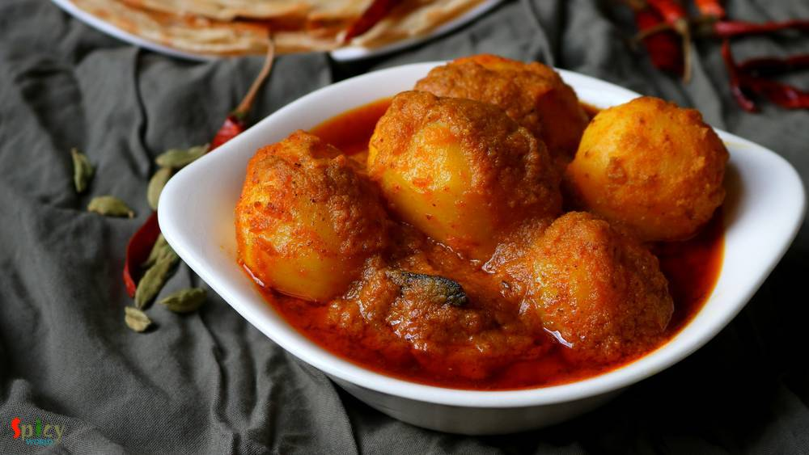
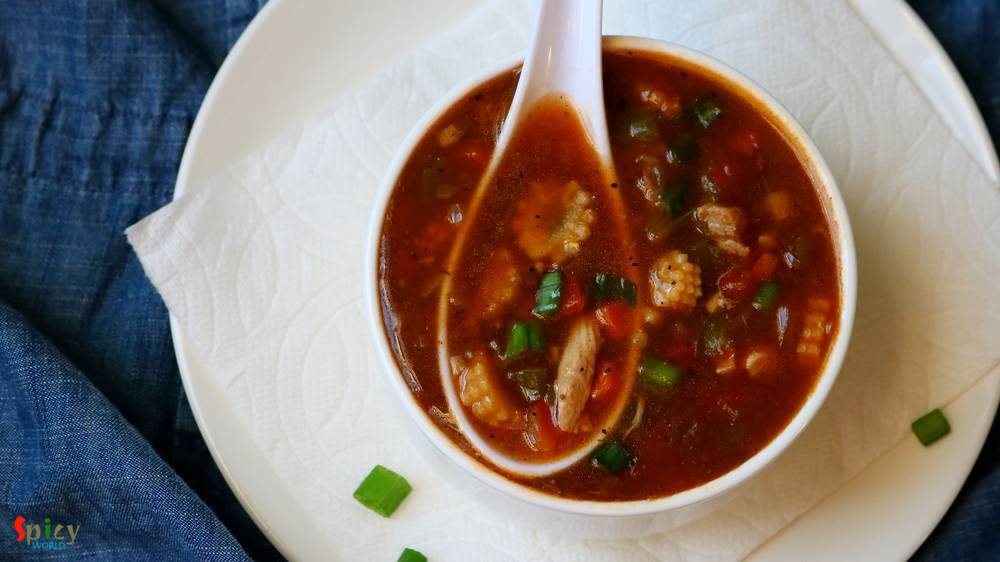

Simple and Easy Recipes

Nonveg Recipe
Feb 26, 2019
Dalna means a curry which contains potato with other vegetables or protein. But potato is a must for Dalna. Some also call it Torkari. Summer is coming and so is sweaty tiredness with it. If you don't want to spend long time in the kitchen, no worries! I have a solution. Dimer Dalna or Egg and Potato Curry is the most simple and easy recipe which can easily feed a crowd. Anyone can enjoy a good, t ...

")
Nonveg Recipe
Feb 23, 2019
I guess you all, who follow my blog, already know that we have a 'thing' for Biriyani. Be it with chicken / mutton / prawn we are always ready to enjoy. I've already posted Kolkata style biriyani recipe which is much easier than Hyderabadi style as you need to have full confidence on timing and proportions. In Kolkata we make the chicken with gravy first and then give 'dum' with cooked rice, where ...

Veg Recipe
Feb 18, 2019
Rosogolla is cottage cheese balls cooked and soaked in suger syrup. Rosogolla is a Bengali delicacy. You will get so many flavors of them in Kolkata sweet shops, like Nolen gur / Rose / Mango / Strawberry / Paan / Cardamom and what not! But one of my favorite is Sponge Rosogolla which is plain and simple. They are literally light and soft like sponges! If you follow every tips of this recipe you w ...

Nonveg Recipe
Feb 14, 2019
Mutton korma is an old school and popular non veg main course item from Old Delhi. Any korma recipe has onion and yogurt based sauce, some even add nut paste also. Last weekend I had a party in my house. Among all the foods, the main attraction was Mutton Korma. Korma is very rich itself. Always serve this with light rice item or naan. Do give it a try and let me know how it turned out for you.

Veg Recipe
Feb 10, 2019
Niramish means without onion and garlic. Usually when we offer a meal to god / goddess with our respect and devotion, we call it 'Bhog' / 'prasad' . In any prasad, this Aloor Dom is a must with khichdi and chutney. This recipe is without onion and garlic, that's why I mentioned 'niramish'. During monsoon you can also enjoy this with khichuri, beguni and chutney or in weekend breakfast make some lu ...
Feb 7, 2019
One of the popular Tibetian delicacy is Momo. They are very similar to dumplings and now a well known street food across India. You will get so many varieties from modern MOMO shops like 'MOMO I AM', 'WOW MOMO' etc. Steamed chicken momos are healthy and tastes more delicious with hot & spicy red chutney. Thin wrapper made out of flour will be filled with tasty ground chicken filling, and then they ...
Feb 7, 2019
One of the popular Nepalese delicacy is Momo. They are very similar to dumplings. Chicken momos are healthy and tastes more delicious with hot & spicy chutney. Thin wrapper made out of flour will be filled with tasty ground chicken filling, and then they will be steamed to perfection. You can enjoy them as brunch or snacks.
")
Veg Recipe
Feb 4, 2019
Whats the fun in having Momos without chutney?sounds so boring. This red colored hot and spicy chutney has garlicky and roasted tomato flavor and tastes awesome not only with momos but you can pair it with samosas, kachoris, chicken pakoras etc. In few shops you will find 3 types of momo's chutney - red, yellow and white. But this red hot chutney is very common and popular all across India. Do try ...

Nonveg Recipe
Jan 31, 2019
Mughlai Keema Paratha is a very famous street food which has another name Keema Baida Roti. In Kolkata we call them 'moglai porota'. I made these parathas exactly like street style with minced meat, but you can skip that Keema part and keep the rest of the recipe same. The process is a bit lengthy but it is worth trying. I made dry potato curry along with mughlai paratha because these two goes ver ...

Nonveg Recipe
Jan 28, 2019
Chicken Hot and Sour Soup is one of the popular soup variety from Chinese cuisine. In this silky, spicy, sour broth you can add almost everything like chicken, egg, tofu and many kinds of vegetable. Hot and sour soup tastes best (especially) during winter or monsoon and it can also uplift your taste buds. Try this easy recipe in your kitchen and let me know how it turned out for you.